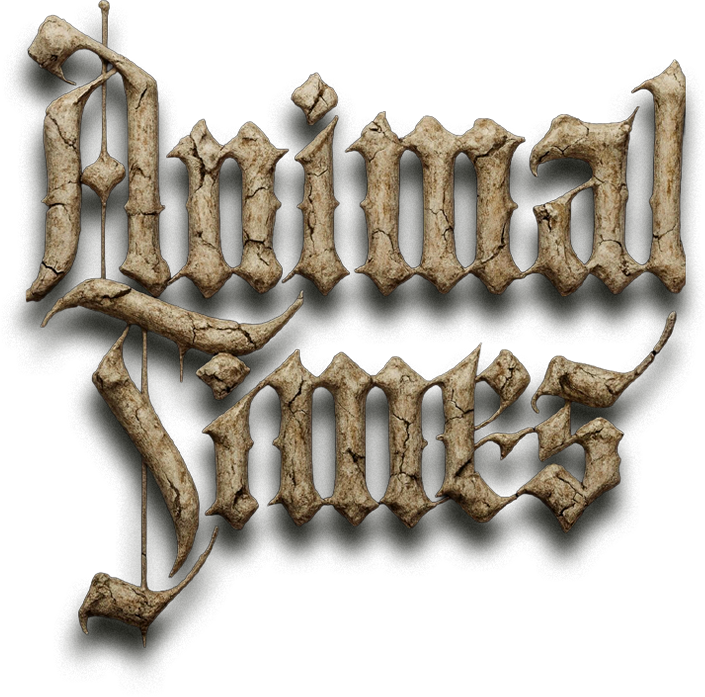

Description
Animal Times is a Risk-inspired strategy game with completely overhauled rules! Command animal armies and conquer territories in this turn-based strategy game where every attack can backfire! Master blunder-style combat, where failed strikes let defenders capture your lands. Bold moves win big in this high-stakes battle for cunning victory.
History
The games is an hommage to my childhood: Combat rules created 25 years ago by father and son wanting more exciting Risk. So it should serve both, Risk-lovers that want fresh gameplay and new challenges, and Risk-haters as Animal Times might fix what Risk did wrong (in my opinion).
Features
- Blunder-style combat system with subtraction-based damage - every die number matters, not just who rolls higher
- Dramatic comeback mechanics: "Attack of Despair" mode activates when you're down to your last units, enabling desperate all-or-nothing strikes
- Defender counter-attacks: failed invasions can result in your own territory being conquered - blunders have real consequences
- Custom world map with 6 continents inspired by the animal avatars.
- Multiplayer battles with bot opponents of varying difficulty (2 bot difficulties are available, more to come)
- Mission system with strategic objectives beyond simple whole World conquest
- Built-in tutorial system to learn the unique combat rules at your own pace
Videos
Post-rebranding Trailer — YouTube
Logo & Icon
{kind=link}

Widgets
Additional Links
- Animal Times Stream by Jay
- "Animal Times Replay": youtube.com.
- Animal Times by Kikord (in French)
- "Animal Times Partie découverte de la démo": youtube.com.
About Fusion 29
- Boilerplate
- We are group of experts in our own fields: (a) Data Scientist [ex-Physicst], (b) Illustrator and Animator, (c) Literature Professor and Writer, (d) Composer and Musician. And we are gonna to try ourselves in upcoming years in making video games :).
- More information
- More information on Fusion 29, our logo & relevant media are available here.
Animal Times Credits
- Miloš Vlainić
- Founder, Game Director (aka Do Everything Else)
- Ljubomir Debeljački
- Illustrator and Animator
- Miloš Jocić
- Narrative Writer and Game Designer
- Svetozar Nešić
- Music Composer
Contact
- Inquiries
- milos.fusion29@gmail.com
- x.com/fusion29studio
- reddit.com/user/Wlakinsson/
- Itch.io
- fusion29dev.itch.io